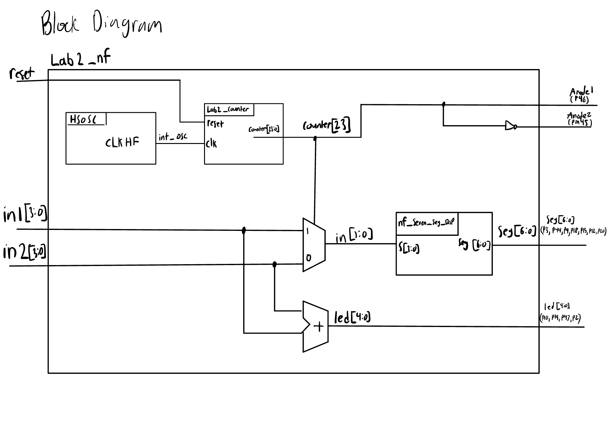
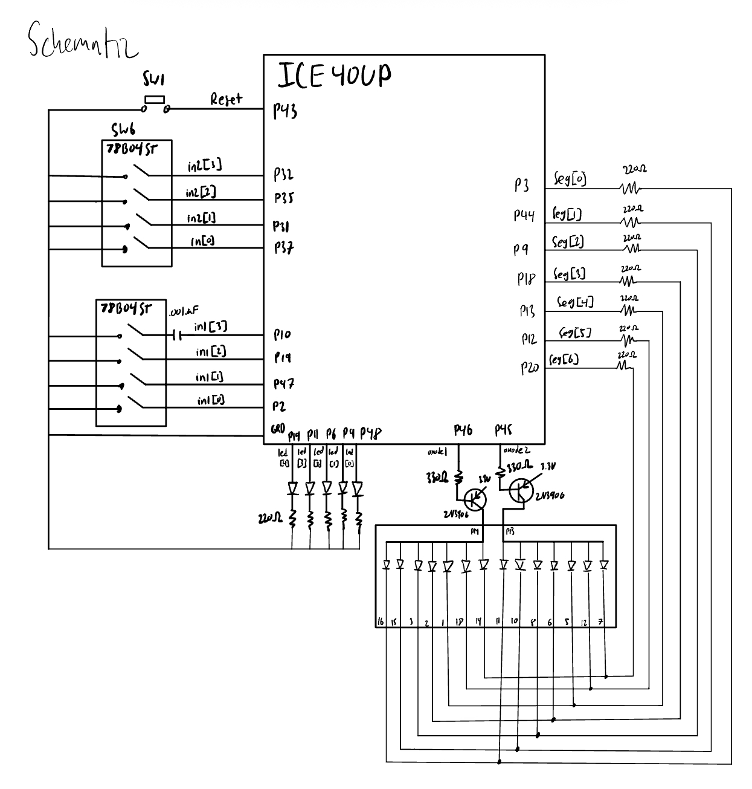
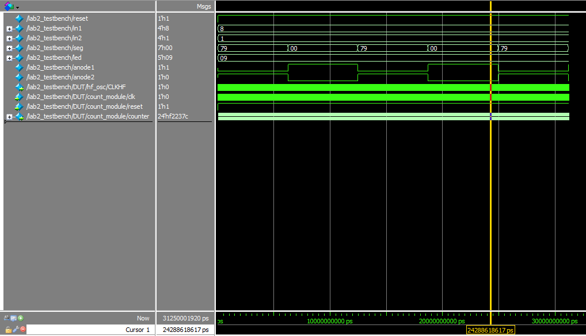
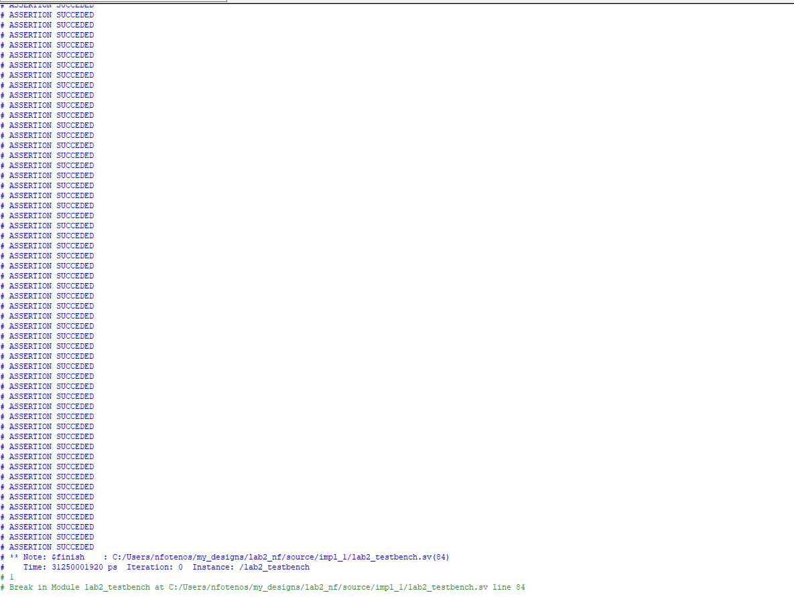
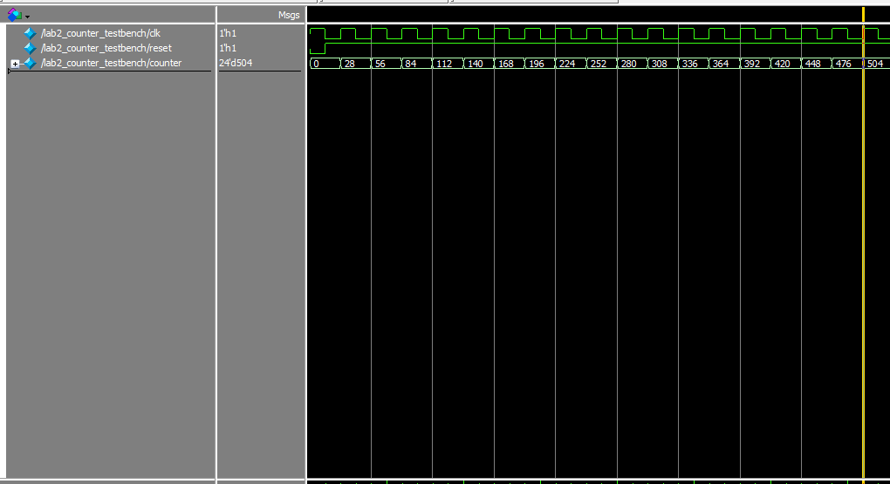
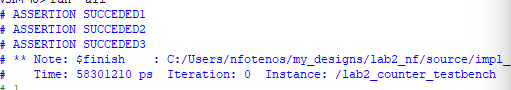

Lab2
Introduction:
In this lab, UPduino v3.1 FPGA is programmed to display 2 7-segment displays controlled by 2 4-input DIP-switches as well as 5 external LED’s showing the sum in binary of the 2 4-bit inputs. Due to the power draw of the 7-segment displays the FPGA can only power one at a time therefor time multiplexing at 80Hz to alternate the anodes of the dual 7-segment displays using PNP transistors.
Design and Testing Methodology:
The resistor values for the 7-Segment displays and external LED’s were derived 220 \(\Omega\). This was found by taking the the input voltage 3.3V minus Vce_sat (.2V) from the PNP transister DataSheet minus the 2.1V voltage drop across the LED to get 1V/220 \(\Omega\) to get 4.5mA which is within the FPGA safe current. The external LED’s just lack the PNP voltage drop so is (3.3-2.1)/220 \(\Omega\) to get 5.4mA which is also safe.
The resister for the PNP transister was picked targeting a 7.4mA from a 3.3v minus the Vbe_sat saturation voltage from base to emitter .85V to get 2.45V/330 \(\Omega\) to be enough to activate the transister and be safe for the FPGA
For Digital methodology the on-board high-speed oscillator (HSOSC) from the iCE40 UltraPlus primitive library was used to generate a clock signal at 48 MHz. Then, a counter was used to divide the high frequency clock signal down to 80Hz to be inviable to the eye without the display bleeding together.
To test the design a Testbench for the 7-segment display was already developed and tested in lab1. Another Testbench was used to verify the counter module for the internal oscillator using assert statements checking the reset low pushes 0 into the counter as well as on the first clock the correct 28 is added to the counter, then waiting for the most significant bit to go high when anticipated. The top level module also uses assert statements to confirm all components work as intended. First checking initial conditions after reset with the adder and segment displays. then while only one anode is on checking a combination of inputs to confirm the LED adder and the 7-segment display output. Then to confirm the oscillation period waiting the half period of 3.125*e^9 pico seconds to confirm the 8Hz frequency.
Technical Documentation:
Code
The source code can be found in the associated Github repository.
Block Diagram:

The block diagram in Figure 1 demonstrates the overall architecture of the design. The top-level module Lab2_nf includes 3 submodules: the high-speed oscillator block (HSOSC), the clock divider module (counter), and combinational logic block to decode the input signal into hex display encoding for the 7-segment display(nf_seven_seg_disp). There is also a simple adder for the cominational logic of the of-board LEDs.
Schematic

Figure 2 shows the physical layout of the design. The output LED was connected using a 220 \(\Omega\) current-limiting resistor to ensure the output current (5.4 mA) did not exceed the maximum output current of the FPGA I/O pins. The oscillating I/O pins activate the 2 PNP transisters to give enough current to the 2 anodes of the LED. The display is controlled by the 7 output pins which go to both displayes cathodes. There is also the on board reset to restart the counter if needed. ## Results and Discussion:
Testbench Simulation:




Results show the design met all intended objectives while passing all tests in simulation.
Conclusion
The design successfully displayed both 7-segment LED’s and sum LEDs without bleeding or visible oscillation. There was a strange bug that with a specific combination of pins were set the led would get disrupted even though the logic was sound and was fixed with a capacitor to one of the I/O pins. If I had more time I would like to find the true source of this bug. This lab took around 10 hours.
AI Prototype Summary
ChatGPT was able to generate a large file but had difficulty calling the other modules correctly. To me the code it generated was much more complicated than it needed to be using syntax I am unfamiliar with. The code is logically sound after inspection but did not synthesize first try. I think if I were to work with this code for a bit I could get it working much faster than it took me.